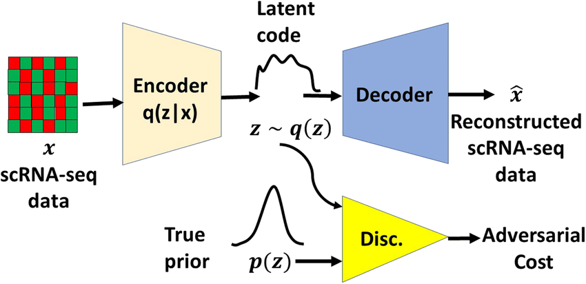
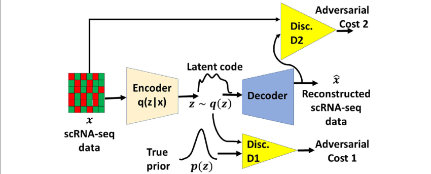

Bachelor Thesis Dimensionality Reduction
Table of Contents
- 1. Overview
- 2. Lines of Thoughts
- 3. Ideas for Hyperparameters
- 4. ML Pipeline
- 5. Autoencoders
- 6. Papers
- 6.1. Common knowledge resources
- 6.2. General papers:
- 6.3. Autoencoders:
- 6.3.1. β-VAE: Learning basic visual concepts with a constrained variational framework
- 6.3.2. Adversarial Variational Bayes: Unifying Variational Autoencoders and Generative Adversarial Networks
- 6.3.3. DISCARDED Generalized Autoencoder: A Neural Network Framework for Dimensionality Reduction
- 6.3.4. Tutorial on Variational Autoencoders
- 6.3.5. Auto-Encoding Variational Bayes
- 6.3.6. InfoVAE: Balancing Learning and Inference in Variational Autoencoders
- 6.3.7. Adversarial Autoencoders
- 6.3.8. Learning representations by maximizing mutual information in variational autoencoders
- 6.3.9. HOLD The information autoencoding family: A lagrangian Perspective on latent variable generative models
- 6.3.10. HOLD CausalVAE: Disentangled Representation Learning via Neural Structural Causal Models
- 6.4. Dimensionality reduction:
- 6.4.1. Auto-encoder based dimensionality reduction
- 6.4.2. Dimensionality Reduction of SDSS Spectra with Variational Autoencoders
- 6.4.3. DISCARDED Dimensionality reduction for EEG-based sleep stage detection: comparison of autoencoders, principal component analysis and factor analysis
- 6.4.4. A deep adversarial variational autoencoder model for dimensionality reduction in single-cell RNA sequencing analysis
- 6.5. Disentagled representation
- 6.6. AE + RL:
- 6.6.1. VARL: a variational autoencoder‑based reinforcement learning Framework for vehicle routing problems
- 6.6.2. Robot skill learning in latent space of a deep autoencoder neural network
- 6.6.3. AutoEncoder-based Safe Reinforcement Learning for Power Augmentation in a Lower-limb Exoskeleton
- 6.6.4. The Dreaming Variational Autoencoder for Reinforcement Learning Environments
- 6.6.5. Deep Variational Reinforcement Learning for POMDPs
- 6.6.6. On the use of Deep Autoencoders for Efficient Embedded Reinforcement Learning
- 6.6.7. DARLA: Improving Zero-Shot Transfer in Reinforcement Learning
- 6.7. Old ideas
- 6.8. TODO Old work
- 6.8.1. Level ground walking for healthy and transfemoral amputee models. Deep reinforcement learning with phasic policy gradient optimization
- 6.8.2. Deep reinforcement learning for physics-based musculoskeletal model of a transfemoral amputee with a prothesis walking on uneven terrain
- 6.8.3. Deep reinforcement learning for physics-based musculoskeletal simulations of healthy subjects and transfemoral protheses' users during normal walking
- 6.8.4. Learning to walk: Phasic Policy Gradient for healthy and impaired musculoskeletal models
- 6.8.5. Evaluating Deep Reinforcement Learning Algorithms for Physics-Based Musculoskeletal Transfemoral Model with a Prosthetic Leg Performing Ground-Level Walking
- 6.8.6. Deep Reinforcement Learning for Physics-based Musculoskeletal Simulations of Transfemoral Prosthesis' Users during the Transition between Normal Walking and Stairs Ascending
- 6.8.7. Testing For Generality Of A Proximal Policy Optimiser For Advanced Human Locomotion Beyond Walking
- 7. Presentations
- 8. INPROGRESS Code
- 9. Contacts
- 10. Todos
- 10.1. Code
- 10.1.1. DONE Vanilla Autoencoder
- 10.1.2. DONE VAE
- 10.1.3. DONE AVB
- 10.1.4. DONE logging
- 10.1.5. DONE tensorboard
- 10.1.6. DONE data loader
- 10.1.7. DONE cross validation
- 10.1.8. DONE parse config
- 10.1.9. DONE writer
- 10.1.10. DONE validate with different loss
- 10.1.11. DONE Create config parser module
- 10.1.12. HOLD Dict -> nametuple
- 10.1.13. INPROGRESS Graph module
- 10.1.14. HOLD Collect Data from simulation
- 10.2. Paper
- 10.1. Code
1 Overview
1.1 Project scope
The project aim to build an autoencoder for dimensionality reduction. In particular, this will be used to hopefully enhance the performance of a DRL algorithm for opensim-rl simulation and to enhance the ability to generalize in different environment. In this project different type of Autoencoders will be tested.
1.2 Index:
1.2.1 Lines of Thoughts
A kinda of overview on what the thesis is about (e.i. Autoencoders and dimensionality reduction)
1.2.2 Papers
A list of all the background literature found. For each of paper there is a short description of the aims and the results.
1.2.3 Autoencoders
Contains a list of implemented and not autoencoders
1.2.4 Ideas for Hyperparameters
Contains some ideas for the hyperparameters fitting and some maybe clever ideas
1.2.5 Code
Contains the git repo and the link for the code documentation
1.2.6 Todos
Contains a list of different type of Todo
1.2.7 Presentations
Contains all the presentations done or in progress
1.2.8 Contacts
Self explanatory
2 Lines of Thoughts
2.1 Dimensionality Reduction
The concept of dimensionality reduction is quite straigthforward. The idea is to reduce the number of dimensions/features while retaining maximum information. Even thought the definition is quite simple being able to perform such transformation is not trivial.
Ideally, the reasons for performing such proceses are:(Note this list is not complete but gives a general overview)
- Avoid the curse of dimensionality
- Reducing potential overfitting of further processing
- Reducing computation time of further processing
- Reducing storage space
- Plotting
- Noise removal
- Removing Correlated features
- Removing redundant features
There are several methods that are able to perform this transformation. They are usually divided in 2 category:
- Linear methods
- Non-Linear methods
Of course there can also be other type of categorizations (e.g. feature selection, feature extraction,Neural,Manifold based,Local methods etc.) In the following sections we will present roughly 2 approaches per category.
NOTE we will only focus on unsupervised methods since they are the most suitable for real-life situation where having labeled data is hard and expensive.
2.2 Autoencoder
An Autoencoder is a special network architecture which approximate two different function encode and decode such as: \[decode(encode(\hat{X})) = \hat{X}\]
Note most of the the time is not an = but an ≈
The network is therefore composed by two different sub networks. An Encoder which can be defined as: \[encode \rightarrow \mathbb{R}^n \times \mathbb{R}^m \] And a Decoder which can be defined as: \[decode \rightarrow \mathbb{R}^m \times \mathbb{R}^n \]
There two constraint to this two function. The first one is that decode must be approximately the inverse of the encode1. The second one is that \[ m << n \]
NOTE when the second constraint is sudisfacted, the autoencoder is cosidered an undercomplete autoencoder. However, every time we will use the autoencoder word we will refer to undercomplete autoencoder.
The second constraint is an architectural one, meanwhile the first one is a functional constraint which will be achived after the network is trained.
The error function is therefore a reconstruction error or distance measure between the input and outuput.
The layer between the Encoder and the Decoder express what is usually knonw as Latent space which dimensionality is \(\mathbb{R}^m\).
We will from now on refer to the Latent space as \(\hat{z}\). For clarity we can rewrite the above formulas as: \[encode(\hat{X}) = \hat{z}\] \[decode(\hat{z}) \approx \hat{X}\]
 As Wang stated 2
As Wang stated 2
Auto-encoder can be seen as a way to transform representation.
2.3 PCA
Principal Component Analysis(PCA) is a linear technique. It is probably one of the most used methods because of its reliability and explainability. Conceptually, PCA find the directions of maximum variance in the data and project it into a new space with fewer dimension than the data
The crucial point of PCA is to find the Principal Component of the data which are therefore completely uncorrelated while maintaining most of hte variability of the data. Note The Principal Components are selected based on the explained variance.
2.3.1 Assumptions
- Linear dimensions (i.e. the variables in the dataset must combine in a linear manner)
- approximately normally distributed data
2.4 LDA
Linear Discriminant Analysis (LDA) is a linear method. In a nutshell, we want to find a new subspace to project the data in order to maximize classes separability.
The idea to measure such separability is to maximize the difference between the mean of each class while minimizing the spread within the class.
The main disadvange is that LDA have good performance only if the dataset is Normally distributed.
2.4.1 Assumptions
- Normally distributed data
- Linear combination of features
2.5 LLE
Locally Linear Embedding (LLE) is a non-linear methods. Conceptually it aims to discover the underline non-linear structure of the data set while preserving the distance within local neighborhoods.

Figure 1: The Autoencoder Structure
This techinique is a 3 steps procedure:
- Uses a KNN approach to find the k nearest neighbors of every data point.
- Approximates each data vecotr as a weighted linear combination of its k-nearest neighbors. (Note all data point which are not in a particular neighborhoods have 0 weight)
- Computes the wieghts that best reconstruct the vectors from its neighbors
2.5.1 Assumptions
- Euclidean distance to compute k-nearest neighbors
- Quite sensible to outliers and noise
2.6 Isomap
Isometric Mapping (Isomap) is a non-linear methods which belong to the category of Manifold Learning.
Ideally it is quite similar to LLE, however, the crucial objective of this mapping is to maintain a geodesic distance between two points.
Note Geodesic is the shortest path between two points on the surface itself. This is why Isomap is considered a Manifold Learning method
This techinique is also defined by a 3 steps process:
- Construct a neighborhoods graph (equivalent to the first step of LLE)
- Compute shortest path between points (using either Dijkstra's or Floyd-Warshall algorithm)
- Construct a d-dimensional embedding by a partial eigenvalue decomposition (i.e. taking the d largest eigenvalues of the kernel)
2.6.1 Assumptions
- Computational intensive
- Euclidean distance for k-nearest neighbors
2.7 Intermezzo
So, we have rapidly been through classical and non dimensionality reduction technique. The main focus of this thesis, though, is to perform what is usually refered as Representation Learning.
Of course, it is quite trivial to see how Representation Learning and Dimensionality reduction are strictly related.
Indeed, a representation usually has fewer dimension than the original input. A good representation also should maintain the most important information/features of the input space.
Therefore, the two branch are strictly related. However, it is important to notice that a good Dimensionality reduction method does not always produce a good representation (by good we mean that it has all the important features needed to learn a mapping between states and actions)
For this reason, this thesis will mainly focus on Autoencoders technique to perform dimensionality reduction since they give a good tradeoff between process flexibility and accuracy. (for reference: 2, 3, 4)
It is also crucial to notice that the literature indicate that usually Autoencoders-based latent space (or embeddings) outperforms other dimensionality reduction technique when the latent space is used as input in an RL-based framework (for reference : 5 , 6 , 7 , 8 , 9 , 10)
Before jumping into more advanced Autoencoders-based techinique we will brefly introduce MDPs Generalization. This is another important point in the thesis since, the two main objective of constructing low dimensional latent space for an RL algorithm are:
- Faster and more stable convergence
- Better Generalization property
The first point seems quite intuitive. Having a low dimensional state space should results in a faster and more stable convergence since the RL algorithm needs to learn a mapping from a low dimensional state space to action which should be easier than learning a mapping from a high dimensional state space to action.
Another intersting point made in 5 is that all Deep Reinforcement Learning (DRL) algorithm implicitly learns a first mapping from high dimensional state space to low dimensional state space and then the maps this low dimensional state space to action. Therefore, by performing dimensionality reduction we take away the concern of learning a good representation from the DRL algorithm which therefore will only focus on learning a mapping from state to action directly.
Other valueable property of doing such a process are described in the next chapter.
2.8 MDPs Generalization
For formal description of this concept look up at 5 (section 2.2)
The idea though is quite intuitive. Let assume that we have a
natural world from which we are able to sample MDPs. The crucial
characteristic of these MDPs is that they all do have the same
action space but they have differences between the state spaces.
However, since we are sampling these MDPs from the same natural
world these state spaces must have some structural similiarity
(i.e. isomorphisms)
Therefore, in order to have good generalization property, we need
to construct a good representation which aims to represent the
state space of the natural world. In order to do so, we cannot
leave this concern to an DRL methods for the following reason.
Since DRL is maximizing some objective, it make sense that the best representation is the most MDP-entangled one and therfore is the one that is guided by the learning process to learn.5 Therefore, if we do not move this concern outside the DRL we will have poor generalization cability, particularly without extensive fine tuning.
Here, Dimensionality reduction methods such as Autoencoders comes to rescue. Since they do not maximize the same objective as the DRL we can guide the process of learning a representation as we please. Moreover, we will discover in the nexts chapters how it is crucial to aims for disentagled representation.
The main downfall of moving the concern of learning a representation outside DRL is that we need to becarefull of the what kind of dataset we use to train the autoencoders. It is crucial that the dataset has big variability and covers most of the "visible" state space. This is because, a lot of autoencoders architecture have weird/undefined behaviour in point of the space not explored during training which is not desirable.
Other potential downfalls are:
- Increase overall computation time (not always true though)
- Risk of losing important information for the DRL algorithm
- Non-trivial definition of AE-hyperparameters
Since usually the AE objective is centered on the reconstruction error it is not trivial to focus on learning usefull representations as opposed to learning representations which are based on the ability of the decoder to achive better reconstruction errors. Therefore, tradeoff must be made in order to achive usefull representations for RL. We will see in future sections how different AE architectures deals with this tradeoff.
2.9 Disentagled Representations
This is a big topic in current AI research 11 (6th big challenge)
In the literature is not entirely clear what we mean when we talk about disentangled representations. However, some research and effort was made to have a formal definition 12 It seems, following their12 definition, that the concept of disentagled is quite similar to the concept of symmetry in physics. Physics, indeed, can be seen as an indept study of symmetries (see More is different from P.W.Anderson in Science which stated "it is only slightly overstating the case to say that physics is the study of symmetry")
This is quite important because, given this point of view, it is easier to define formally (i.e. mathematically) what are the properties of a disentagled representations.
As stated in 12
Intuitevely. we define a vector representation as disentangled, if it can be decomposed into a number of subspaces,each one of which is compatible with, and can be transformed independently by a unique symmetry transformation
The paper12, then goes towards defining more formally this intuition using group theory, and this concept of symmetries.
Of course, this is one point of view on disentangled representations, there are different ones, however, this is to the best of our knowledge the best formal attempt to define it.
Another important point is that this "new" definition tries to put together all the different approaches/point of view that were present in the literature at that time. The main 3 charateristic that the authors identifies are: modularity,compactness and explicitness.
- Modularity Directly quoting from 12 "measures whether a single latent dimension encodes no more than a single data generative factor"
- Compactness "measures whether each data generative factor is encoded by a single lantent dimension"
- Explicitness "measures whether the values of all of the data generative factors can be decoded from the representation usign a linear transformation"
Not all of them are explicitly required to have a disentangled representation. Particularly the explicitness charateristic, since linearity is not required to have a disentangled representation (given the definition in 12)
So now that we have a general overview of what we mean when we talk about disentangled representation, we can move on in understanding whether having such a representation is usefull or at least is better than having a "normal" representation (i.e. without forcing any of the properties aforementioned)
Understanding whether it is usefull having such a representation is also not a trivial task, and the literature is not clear on it. Most papers, claims that having such a thing is usefull for three main reasons 13:
- more sample-efficient
- less sensitive to nuisance variables
- better in terms of generalization
This has been shown to be experimentally correct13, however, from a formal point of view it is not clear why this is the case.
That is another motivation for conducting this thesis on disentangled representation to see whether this findings translates to harder and more complex settings.
Now we will proceed to show the different architectures that will used in the thesis and we will justify the decision on each one.
2.10 TODO Adversarial Autoencoder
2.11 TODO Variational Autoencoder
2.12 TODO β-VAE
2.13 TODO Info VAE
2.14 INPROGRESS Random thought
Based on (towards ) why not training the AE and RL toghether. an idea can be to mix the two objective toghether by a sum (for a trivial case) other ideas can be to scale the objective of the AE based on time another idea can be to scale the objective of the AE based on how "good" the current representation is. For example we can use on of the disentanglement metrics described in the papers . Another interesting ideas is to use some metric of the representation to guide the exploration policy of the RL agent. Something like: There are points/ areas of the latent space which we did not explore yet or that maybe we have a low "bias" (we just encounter those states just few times)
Seems that active perception is quite crucial to learn a good and usefull representation of the world! and more importantly to learn the invariant of the world. Maybe this has something to do with active learning and GFlow net by Benjo! More investigation is needed.
3 Ideas for Hyperparameters
Since we will have to fit quite a lot of hyperparameters we tried to come up with some cleaver ideas to remove some of these hyperparameters.
3.1 Number of neurons per layer
The first hyperparameters we would like to remove is the number of neurons per layer. Since we are doing an autoencoder and therefore we are trying to find a compression function f we can assume that the number of neurons per layer is defined by some kind of function h that given the number of layers N, the numeber of dimension of the input I and the final number of dimension of the latent space Z returns the number of neurons for a specific layer. This function can be either linear or non-linear. The first intuition is that if h is linear it should be somewhat easier to learn a good compression function f. However, until now, we do not have any mathematical backgroud for this intuition! We need to do more research!
The first possible implementation of this function is defined as follows: (n is the index of the layer for which we are trying to find the number of neurons)
\[n_1 = I\] \[n_N = Z\] \[n_i = n_{i+1}*\lambda\] From these equations we can find out the equation which define the value of λ quite intuitevely. \[ \lambda = \sqrt[N-1]{\frac{I}{Z}} \] Now we can derive the number of layers given the number of neurons for the first and last layer \[ n_i = n_N * \prod_{x=1}^{N-i} \lambda \] \[ n_i= n_N * \lambda^{N-1}\] Substitute λ with the prievious found equation. \[ n_i = n_N * \left(\sqrt[N-1]{\frac{I}{Z}}\right)^ {N-i} \] \[ n_i = n_N * \left(\frac{I}{Z}\right)^{\frac{N-i}{N-1}} \] \[ n_i = Z * \left(\frac{I}{Z}\right)^{\frac{N-i}{N-1}} \]
4 ML Pipeline
5 Autoencoders
5.1 DONE Vanilla
The vanilla autoencoder is the classical one. Composed by an encoder and a decoder without any kind of constriction.
5.2 DONE VAE
The Variational autoencoder is a modified version of a vanilla AE which forces the distribution of the latent space to be a gaussian.
5.3 DONE AVB
Adversarial Variational Bayes is a relatively new ideas which exploits some Bayesian concept to force a particular latent space distribution. All is done in an adversarial environment.
5.4 HOLD B-VAE
Quite interesting if focus is on transfer learning and disentangled representations
5.5 HOLD InfoVae
6 Papers
6.1 Common knowledge resources
6.2 General papers:
6.2.1 Interpretable machine learning: Fundamental principles and 10 grand challenges11
Quite interesting paper about the 10 grand problems/challenges in the current Machine learning state of research Note the 6th one is about unsupervised disentaglement of neural networks
6.3 Autoencoders:
6.3.1 β-VAE: Learning basic visual concepts with a constrained variational framework14
- Summary
- introduces β-VAE
- shows how to achive better disentangled representations
- introduces a new hyperparameter (β) which forces the posterior to be closer to the isotropic unit Gaussian (prior)
- Introduces a new metric for measuring the disentanglement (independece + interpretability)
- reconstruction error should not be used to discriminate between AE (or at least it should be the only factor) see conclusions
- Interesting references (usef
6.3.2 Adversarial Variational Bayes: Unifying Variational Autoencoders and Generative Adversarial Networks 15
- Summary
- Introduces AVB
- Adversarial procedure
- focuses on giving better flexibility to the normal VAE procedure
- Quite interesting approach however,does not focuses on disentagling the representation so, even tho, it achieve on average better results than a normal VAE maybe it is not suitable in a RL framework. Testing is need to asses the performance.
- Resources
6.3.3 DISCARDED Generalized Autoencoder: A Neural Network Framework for Dimensionality Reduction16
6.3.4 Tutorial on Variational Autoencoders17
Quite usefull tutorial, explains unformally what vae tries to achive and how it does it.
6.3.5 Auto-Encoding Variational Bayes 18
6.3.6 InfoVAE: Balancing Learning and Inference in Variational Autoencoders 19
- Summary
- Shows crucial down fall of the ELBO objective.
- Introduces a new objective.
- Quite interesting cause it tries to balance the mutual information between the X and Z while trying to force the posterior distribution to a family of distribution (e.g. Guassian)
- It is a generalization of the β-VAE, VAE and Adversarial AE
- Also shows how it is possible to change the divergence metric in this new objective function (the only requirement is that it must be a strict divergence metric (i.e. D(p,q) = 0 iff p(x) = q(x)))
- This new objective also focuses on learning disentagled representations
- REALLY INTERESTING in particular in an RL framework since it parametrize both mutual information
6.3.7 Adversarial Autoencoders 20

Figure 2: Adversarial Autoencoder structure
- Summary
- introduces formally the AAE
- The main difference between VAE and AAE is that the KL term (or cross entropy) is replaced with a discriminator network to force and adversarial learning process
- Moreover, in constrast to VAE, we do not need to have a functional form of the posterior distribution we want to force. We just need to be able to sample from it.
- The objective of the AE is to both minimize the reconstruction error and to fool as best as possible the discriminator.
- The discriminator is used to discriminate between the wanted posterior and the actual latent space distribution
- Quite interesting however, does not look like it focus on disentangled representations but on the reconstruction error which maybe is not suitable if the main point is to use it within an RL framework. However, it can be intere
6.3.8 Learning representations by maximizing mutual information in variational autoencoders 21
- Summary
- Quite interesting new architecture (similar approach to 19)
- Again mark the fact that ELBO and KL aims to decrease the mutual information between the input and the latent representation which can results in quite bad representations
- for future
6.3.9 HOLD The information autoencoding family: A lagrangian Perspective on latent variable generative models 22
6.3.10 HOLD CausalVAE: Disentangled Representation Learning via Neural Structural Causal Models 23
6.4 Dimensionality reduction:
6.4.1 Auto-encoder based dimensionality reduction 2
Contributions
We start from auto-encoder and focus on its ability to reduce
the dimensionality, trying to understand the difference between
auto-encoder and state-of-the-art dimensionality reduction
methods. The results show that auto-encoder indeed learn
something different from other methods.
We preliminarily investigate the influence of the number of
hidden layer nodes on the performance of auto-encoder on
MNIST and Olivetti face datasets. The results reveal its possible
relation with the intrinsic dimensionality.
- Summary
Shows comparison of Autoencoder and other dimensionality reduction methods (e.g. PCA,LLE) Notable results: Autoencoder different than other dimensionality reduction. Potentially detect repetitive structures. Dimensionality of the Latent space is best when it maches the intrinsic dimensionality of the dataset.
- Opinions
This clearly shows how Autoencoder can be essentially different and more usefull than other dimensionality reduction methods. This consolidate the choice of usi
6.4.2 Dimensionality Reduction of SDSS Spectra with Variational Autoencoders 3
- Summary
Show how AEs were already used in astrony for different dimensionality reduction/classification task with success. Moreover, it aims to address the limitation of PCA using VAE. Results show how on this dataset (SDSS sloan digital sky survey) the autoencoder outperforms PCA in particular with low dimension latent space(or component for PCA) They mainly use InfoVAE19,a variant of the VAE, focused on trying to disentangle (e.i. force mapping different inputs to disjoint distribution ) the different latent space
6.4.3 DISCARDED Dimensionality reduction for EEG-based sleep stage detection: comparison of autoencoders, principal component analysis and factor analysis 24
It was DISCARDED because it contains too specific content and the comparison between algorithms has multiple steps and variables which are highly specific to the task. Therefore I do not think it should b
6.4.4 A deep adversarial variational autoencoder model for dimensionality reduction in single-cell RNA sequencing analysis 4

Figure 3: Adversarial Variational Autoencoder with dual matching
- Summary
It introduces a novel Adversarial autoencoder architecture named AVE-DM (Adversarial Variational autoencoder with dual matching ) The main difference between this new architecture and the prievious proposed Adversarial autoencoders20 is that it has 2 discriminator (hence the name dual matching). Main Results: Shows how AVE-DM outperforms other state-of-the-art methods such us PCA, UMAP (Uniform Manifold Approximation and Projection), t-SNE (T-distributed sochastic neighbor embedding ) etc. Note: The interesting part of the data is that it have dropout event (the reason for it is quite technical and specific to RNA sequencing). This dropout event are zero expression measurament that can be either biological or technical. This phenomenon result in poor results
6.5 Disentagled representation
6.5.1 Understanding disentagling in β-VAE 25
6.5.2 Towards a Definition of Disentangled Representations 12
6.5.4 DISCARDED On the binding Problem in Artificial Neural Networks 26
Really interesting paper about the binding problems. It does talk about representation learning and disentagled representations however, it goes way beyond the scope of this thesis talking about hierarchical representations, object detection and classification etc. Really interesting for future research!
6.6 AE + RL:
6.6.1 VARL: a variational autoencoder‑based reinforcement learning Framework for vehicle routing problems 6
Quotes
It inherits the idea of variational inference to use a distribution to approximate the posterior distribution18. The
diference is that VAE considers the posterior distribution
of all data simultaneously and approximates each posterior
distribution with distribution, minimizing KL divergence.
It has many advantages,
including fast training, stability, and so on, so it has a wide
range of theoretical models and industry applications.
- Summary
Introduces a new variational framework for combinatorial optimization (e.g. TSP). Introduces Variational inference and VAE. Propose VARL (Variational autoencoder-based reinforcement learning) which exploits variational inference ideas to learn efiiciently and effectively a solution in a graph-based framework.
- Opinions
The main down side is that the VARL architecture seems to be quite complex and specific for combinatorial optimization. That said, it also shows how variational inference can be effectively used in combination with reinforcement learning (in the paper R
6.6.2 Robot skill learning in latent space of a deep autoencoder neural network 7
- Summary
- Gaussian Process Regression (GPR) for statistical learning
- Shows that Autoencoder-based latent space is more effective than PCA-based latent space
- Tanh as hidden activation function and linear for output
- Interesting enough the AE with only Linear activation function still performs better than PCA (researcher stated that maybe it's due to the fact that AE latent space dimensions do not have to be orthogonal (interesting!))
- RL converges faster and it is more stable in latent space with respect to DMP space (this is true for both PCA and AE)
- Moreover RL+AE outperforms RL+PCA! researcher stated that this is probably due to the non linearity in AE
- In particular during the introduction sections it has a lot of good references which are worth looking in
6.6.3 AutoEncoder-based Safe Reinforcement Learning for Power Augmentation in a Lower-limb Exoskeleton 1
- Summary
- GPR used to generate data given few real-world examples.
- AE both for action and state space reduction.
- Action and states are DMP
- MSE as loss function
- This paper also shows that AE-based latent space make the RL learning process faster,safe and more stable.
- Note: in this paper HMI (Human-Machine Interaction) was a central role in the optimizat
6.6.4 The Dreaming Variational Autoencoder for Reinforcement Learning Environments 10
- Summary
- NOTE Gaussian distributed policy for initial state-space exploration
- Introduces DVAE architecture
- Main aims is to model environments with sparse rewards in order to perform offline RL.
- Main problems: if the exploration in the real environment is constly. Then this techinique does not behave as the environments in the unexplored states.
- Quite interesting, however, not fitting for highly complex and continuos environments where exploration is costly and/or
6.6.5 Deep Variational Reinforcement Learning for POMDPs 9
- Summary
- Defines a new RL method with AE
- Interesting is that a new method for approximating the ELBO is introduced. Using MC methods.
- NOTE Interesting part is that latent space mapping and policy are learned toghether. However, policy is update more frequently then the latent space. Which stabilize the learning process.
- Only test in "trivial" environment (Though most of them are continuos)
- Quite interesting, seems too complex and more reasearch most be done if we want to use this approch.
- Contains some use
6.6.6 On the use of Deep Autoencoders for Efficient Embedded Reinforcement Learning 8
- Summary
- Shows how using AE-based latent space reduce the time of convergence. Moreover, it also produce more vaiable policies faster.
- The main downsite with respect to the thesis is that a big part of this advantage is due to the fact that images were the input to the AE. Of course, this is the main reason why the vanilla RL performs drastically worst than the one with the Convolutional AE.
- However, seems another good source of information which again shows that AE-based latent space increase the RL performance and decrease the time
6.6.7 DARLA: Improving Zero-Shot Transfer in Reinforcement Learning 5
- Summary
- REALLY INTERESTING PAPER!
- formally shows how to do zero-shot transfer on MDPs
- introduces this new concept DARLA (DisentAngle Rapresentation Learning Agent)
- 3 steps:
- Learn to see (Train the AE with some fixed policy ) Crucial the distribution of data collected in this phase must be as variagate as possible in order to train the AE appropriately.
- Learn to act Train the RL agent on the source domain using the latent space of the AE
- Transfer Test the RL agent on the target domain without anymore fine-tuning
- Uses β-VAE which aims to force the learning of a disentangled representation
- Resources
6.7 Old ideas
6.7.1 Deep reinforcement learning for modeling human locomotion control in neuromechanical simulation 27
- Summary
review paper, it introduces in general the topic. it illustrate previous methodology and then it moves on Deep Rl. It talks about Learn to Move competition and the different techniques used in that competition. Finally some future directions.
- Opinions
This paper is really interesting in particular the part about Learn to Move and future directions.
- Ideas
It suggest imitation learning and hierarchical
6.8 TODO Old work
6.8.1 Level ground walking for healthy and transfemoral amputee models. Deep reinforcement learning with phasic policy gradient optimization 28
6.8.2 Deep reinforcement learning for physics-based musculoskeletal model of a transfemoral amputee with a prothesis walking on uneven terrain 29
6.8.3 Deep reinforcement learning for physics-based musculoskeletal simulations of healthy subjects and transfemoral protheses' users during normal walking 30
6.8.4 Learning to walk: Phasic Policy Gradient for healthy and impaired musculoskeletal models 31
6.8.5 Evaluating Deep Reinforcement Learning Algorithms for Physics-Based Musculoskeletal Transfemoral Model with a Prosthetic Leg Performing Ground-Level Walking 32
6.8.6 Deep Reinforcement Learning for Physics-based Musculoskeletal Simulations of Transfemoral Prosthesis' Users during the Transition between Normal Walking and Stairs Ascending 33
6.8.7 Testing For Generality Of A Proximal Policy Optimiser For Advanced Human Locomotion Beyond Walking 34
7 Presentations
7.1 First one
8 INPROGRESS Code
Visit this file to see the current documentation
WORK IN PROGRESS FIXME the documentation is in progress and it can be potentially not up to date
8.1 REPOS
9 Contacts
9.1 Massimiliano Falzari
m.falzari@student.rug.nl
9.2 Professor
- Raffealla carloni
- SkypeID rafficar
- BlueJeans https://bluejeans.com/821650990 id number = 821650990
9.3 Other Students
- c.m.sreedhara@student.rug.nl
- B.N.Ogum@student.rug.nl -> Master student for dim red
- Chadan